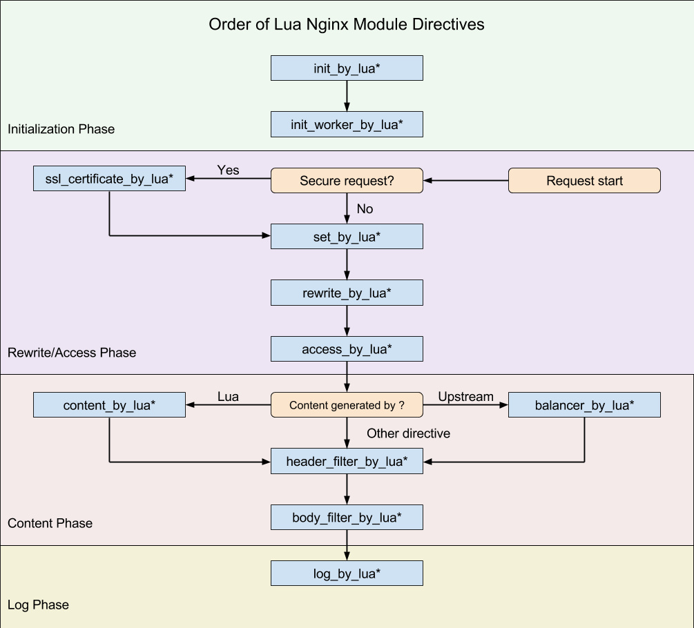

nginx_lua脚本学习
- Lua简明教程: http://coolshell.cn/articles/10739.html
- Lua 5.1中文手册: http://manual.luaer.cn/
- Lua程序设计: http://book.luaer.cn/
- lua-nginx:
- OpenResty最佳实践:https://moonbingbing.gitbooks.io/openresty-best-practices/content/
- Ngx Lua入门: https://www.iteye.com/blog/jinnianshilongnian-2186448
-
由Lua 粘合的Nginx生态环境:
- https://blog.csdn.net/ygm_linux/article/details/53561176
- ngx_openresty: an Nginx ecosystem glued by Lua:
- 章亦春 (agentzh)
- http://agentzh.org/
NgxLua执行过程

ngx_lua属于nginx的一部分，它的执行指令都包含在nginx的11个步骤之中了，相应的处理阶段可以做插入式处理，即可插拔式架构，不过ngx_lua并不是所有阶段都会运行的；另外指令可以在http、server、server if、location、location if几个范围进行配置：
| 指令 | 所处处理阶段 | 使用范围 | 解释 |
|---|---|---|---|
| init_by_lua | loading-config | http | nginx Master进程加载配置时执行； |
| init_by_lua_file | 通常用于初始化全局配置/预加载Lua模块 | ||
| init_worker_by_lua | starting-worker | http | 每个Nginx Worker进程启动时调用的计时器,如果Master进程不允许则只会在init_by_lua之后调用； |
| init_worker_by_lua_file | 通常用于定时拉取配置/数据,或者后端服务的健康检查 | ||
| set_by_lua | rewrite | server,server if,location,location if | 设置nginx变量,可以实现复杂的赋值逻辑；此处是阻塞的,Lua代码要做到非常快； |
| set_by_lua_file | |||
| rewrite_by_lua | rewrite tail | http,server,location,location if | rrewrite阶段处理,可以实现复杂的转发/重定向逻辑； |
| rewrite_by_lua_file | |||
| access_by_lua | access tail | http,server,location,location if | 请求访问阶段处理,用于访问控制 |
| access_by_lua_file | |||
| content_by_lua | content | location,location if | 内容处理器,接收请求处理并输出响应 |
| content_by_lua_file | |||
| header_filter_by_lua | output-header-filter | http,server,location,location if | 设置header和cookie |
| header_filter_by_lua_file | |||
| body_filter_by_lua | output-body-filter | http,server,location,location if | 对响应数据进行过滤,比如截断、替换。 |
| body_filter_by_lua_file | |||
| log_by_lua | log | http,server,location,location if | log阶段处理,比如记录访问量/统计平均响应时间 |
| log_by_lua_file |
基本操作
location /echo {
default_type 'text/plain';
echo 'hello world';
}
location /luatest {
default_type 'text/plain';
content_by_lua '
ngx.say("request_method:",ngx.var.request_method)
local args = nil
if ngx.var.request_method == "POST" then
ngx.req.read_body()
args = ngx.req.get_post_args()
elseif ngx.var.request_method == "GET" then
args = ngx.req.get_uri_args()
else
args = "no"
end
for key, val in pairs(args) do
if type(val) == "table" then
ngx.say(key, ": ", table.concat(val, ", "))
else
ngx.say(key, ": ", val)
end
end
';
}
location = /request_body {
default_type 'text/plain';
client_max_body_size 50k;
client_body_buffer_size 50k;
content_by_lua '
ngx.req.read_body() -- explicitly read the req body
local data = ngx.req.get_body_data()
if data then
ngx.say("body data:")
ngx.print(data)
return
end
-- body may get buffered in a temp file:
local file = ngx.req.get_body_file()
if file then
ngx.say("body is in file ", file)
else
ngx.say("no body found")
end
';
}